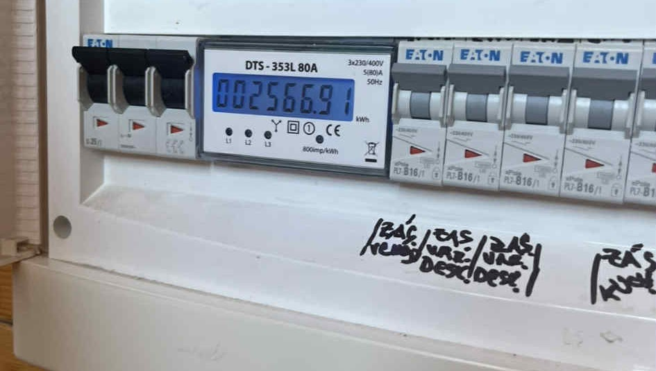

Primeros auxilios en un apagón
Si puedes actuar sobre un cuadro eléctrico, revisa los paneles como en esta foto. IMPORTANTE: LLEVA SIEMPRE ZAPATOS CON SUELA DE GOMA cuando toques cualquier cuadro o aparato eléctrico.
Mira más abajo y contáctanos si lo necesitas.

Los puntos rojos muestran la ubicación de los interruptores que debes comprobar que estén hacia arriba.
Primero, comprueba el cuadro eléctrico dentro de tu casa flotante: todos los interruptores deben estar hacia arriba.

Todos los interruptores deben estar hacia arriba (salvo que haya un cartel, cinta o algo inusual).

Los cuadros eléctricos están en el muelle, parecidos a este. Algunos están espalda contra espalda.

Comprueba que estos estén hacia arriba, cerca de la puerta azul.

Estos también pueden haber saltado hacia abajo.

Al comienzo del aparcamiento, comprueba si el número 9 tiene todos los interruptores hacia arriba (


N.º 9 por dentro (necesitas una llave o algo que gire el tetón cuadrado)
Consejo: unas tijeras pueden ayudar a girar el orificio cuadrado de la manilla para abrir el número 9.
IMPORTANTE: cierra siempre la puerta del cuadro después, sobre todo si llueve.

Más adelante, el número 8 tiene unos cuantos interruptores que también deben estar hacia arriba.
Consejo: unas tijeras pueden ayudar a girar el orificio cuadrado de la manilla para abrir el número 8.
IMPORTANTE: cierra siempre la puerta del cuadro después, sobre todo si llueve.

Comprueba estos por dentro. ¡Asegúrate siempre de que nadie esté trabajando aguas abajo!
IMPORTANTE: POR FAVOR, INDICA QUÉ INTERRUPTOR ESTABA ABAJO. HAZ UNA FOTO ANTES Y DESPUÉS.
Los apagones en las casas flotantes son más frecuentes que en un piso, por motivos de capacidad y por más exigencias del tiempo, sobre todo en días muy calurosos o muy fríos.
Esta página se tradujo automáticamente de la guía en inglés. En caso de duda, prevalece la versión en inglés. Original en inglés